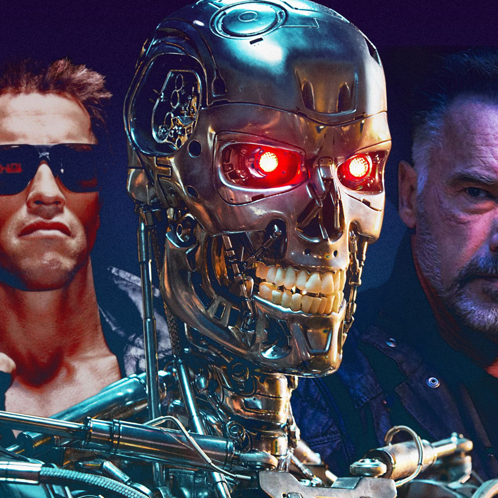
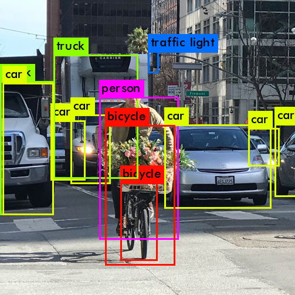
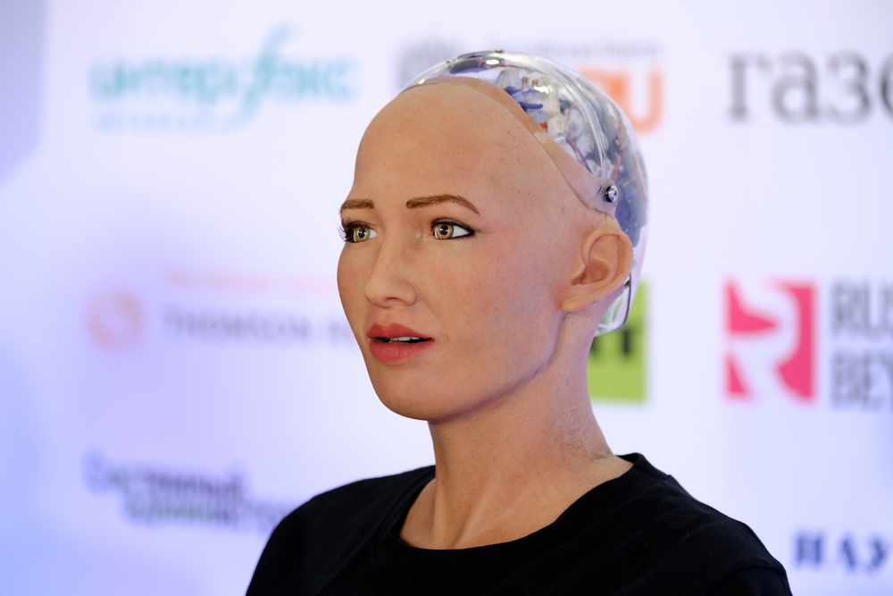
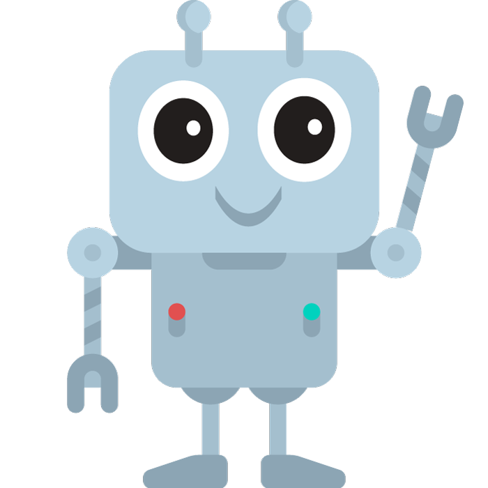

CREATION
AI creation began in the 1950s and 1960s with the development of the first AI programs. These programs were rule-based systems that could perform tasks such as playing chess and proving mathematical theorems. In the following decades, new techniques and technologies, such as expert systems, neural networks, and machine learning algorithms, were developed to advance AI research. One significant figure in the history of AI creation is Alan Turing, a British mathematician, computer scientist, and logician who made several contributions to the development of computer science and artificial intelligence. During World War II, Turing played a crucial role in breaking the German Enigma code.

DEFINITION
Artificial Intelligence (AI) involves the development of algorithms, models, and systems that enable machines to learn from data, make decisions, and perform tasks that traditionally require human intelligence. AI is built on a foundation of computer science, mathematics, statistics, and other disciplines that enable machines to analyze and understand complex data patterns. Machine learning, a key component of AI, involves training algorithms on large datasets to improve their ability to make predictions or decisions. Deep learning, a subset of machine learning, uses neural networks to simulate the behavior of the human brain and achieve even greater accuracy in processing and analyzing data. The development of AI involves a combination of technical expertise, creativity, and domain knowledge to create intelligent machines that can solve real-world problems.
FICTION
Artificial intelligence (AI) has been a popular theme in science fiction for many years, often taking center stage as a key character or driving force of the story. Here are a few examples of AI in fiction: Terminator, Samantha or Data. These are just a few examples of how AI has been portrayed in fiction, but they highlight some of the key themes and questions that arise when thinking about artificial intelligence - such as the potential for AI to become dangerous, the relationship between humans and machines, and the ethical considerations of creating and interacting with intelligent beings.

REVOLUTION
AI, or artificial intelligence, is considered a revolution because it has the potential to transform many aspects of our lives. AI is already revolutionizing various industries such as healthcare where AI is being used to help diagnose and treat a wide range of medical conditions. For example, AI algorithms can analyze medical images to detect signs of cancer or other diseases. AI can also be used to predict which patients are most likely to develop certain health conditions, allowing doctors to intervene early and potentially prevent serious health problems. AI is also used for entertainment purposes to create more personalized experiences. For example, streaming services like Netflix and Amazon Prime use AI algorithms to recommend movies and TV shows based on a viewer's previous watching habits. AI is also being used to create virtual assistants that can interact with viewers and provide customized recommendations.
COMPUTER VISION
Image recognition by AIs has become increasingly sophisticated, with applications ranging from identifying objects in photos to detecting emotions on people's faces. However, there are also risks associated with this technology, particularly when it comes to privacy and surveillance. One example is in China, where the government has been using facial recognition technology to monitor citizens and track their movements. This has raised concerns about privacy violations and the potential for the government to use this technology to suppress dissent. As AI continues to advance, it is important to consider the potential risks and to ensure that these technologies are used in a way that is both ethical and responsible.

ROBOTICS
Sophia is an example of a robot that uses AI to interact with humans. Developed by Hanson Robotics, Sophia has been designed to mimic human facial expressions and engage in natural conversation with people. Sophia uses natural language processing and machine learning algorithms to understand and respond to human speech. She can also recognize faces, make eye contact, and convey emotions through her facial expressions. However, there are also concerns about the potential impact of robots like Sophia on the job market and the need for ethical considerations in their development and use. As AI continues to advance, it is important to consider both the potential benefits and the potential risks of these technologies.

LEARNING
AI is constantly learning and improving, thanks to machine learning and deep learning techniques. Machine learning is a method of teaching machines to recognize patterns and make decisions based on data. It involves using algorithms to analyze large datasets and identify patterns that can be used to make predictions or take actions. Deep learning, on the other hand, involves the use of neural networks, which are modeled after the structure of the human brain. Deep learning is particularly useful for tasks that involve processing large amounts of complex data, such as image or speech recognition. Both machine and deep learning involve training algorithms on large datasets, allowing them to learn from their experiences and improve their accuracy over time. As AI continues to advance, these techniques are becoming increasingly sophisticated, allowing machines to perform tasks that were once limited to human capabilities.
AROUND US
AI is constantly working behind the scenes to make our lives easier and more personalized. One example of AI in action is Midjourney, an application meant to generate images from prompt given by the user. This AI creates unique pictures that can't be reproduced enven by using the same prompt as before.The AI definitely has it's own style and can be asked to create images using a famous artist's style ! Another example of AI in action is GitHub Copilot, an AI-powered code completion tool that uses machine learning to suggest code snippets based on the context of the code being written. GitHub Copilot can suggest code that is both accurate and efficient, saving developers time and improving the quality of their code.
ETHICS
The development and use of AI raise a range of ethical problems. One major concern is the potential for bias and discrimination in AI systems. If AI algorithms are trained on biased data, they may produce biased results, potentially perpetuating existing inequalities in society. There are also concerns about the potential impact of AI on the job market, as machines become increasingly capable of performing tasks that were once limited to humans. Additionally, there are concerns about the privacy implications of AI, particularly when it comes to the collection and use of personal data. There are also concerns about the potential for AI to be used in military applications or other scenarios where its use could have dangerous consequences. As AI continues to advance, it is important to consider the ethical implications of these technologies and to ensure that they are developed and used in a way that is both responsible and beneficial for society as a whole.
PROS AND CONS
AI usage has both pros and cons, depending on the context and application. Some potential benefits of AI include increased efficiency and productivity. In fields such as healthcare, AI has the potential to improve patient outcomes by assisting with diagnoses and treatment plans. However, there are also potential drawbacks to AI usage. These include concerns about privacy and security, the potential for bias and discrimination in AI systems. There are also concerns about the potential misuse of AI for malicious purposes, such as cyberattacks or autonomous weapons. Additionally, there are concerns about the potential loss of human control over AI-powered systems, particularly in scenarios where these systems are making decisions that have significant consequences. As AI continues to advance and become more widespread, it is important to carefully consider both the potential benefits and the potential risks of these technologies.
ON THIS SITE
Wanna know if I've been using AI to create this website ? Well the answer is yes. Many apps helped me out working on this site starting from code autocompletion to generating images. For the code autocompletion? I am using a free extension on Microsoft Visual Studio Code. Regarding grammar, I've used a Web addon that helped me correct my phrasing. The background image on the top has been painfully generated with Midjourney, AI is definitely not always easy to use, especially when you have a specific idea in mind ! And the winner among all is ChatGPT that saved me from becoming crazy when creating the title animation on top that I've been struggling for hours to create (as well as creating the smooth scrolling effect). I hope you've learned some intersting aspects of Artificial Intelligence !
